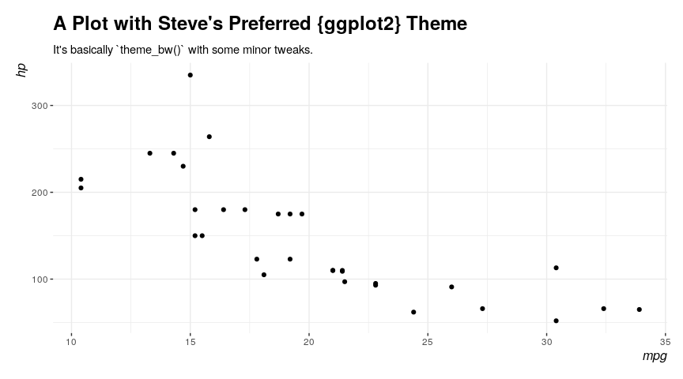
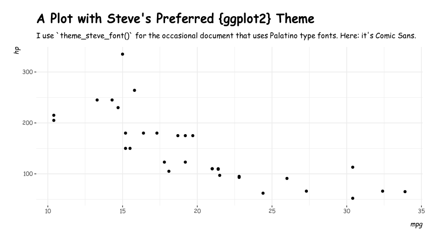

{stevemisc} is an R package that includes various functions and tools that I have written over the years to assist me in my research, teaching, and public presentations (i.e. stuff I put on my blog). I offer it here for a public release because 1) I am vain and think I want an entire, eponymous ecosystem in the R programming language (i.e. the “steveverse”) and 2) I think there are tools here that are broadly useful for users that I’m trying to bundle with other things that I offer (prominently {steveproj}). Namely, {stevemisc} offers tools to assist in data organization, data presentation, data recoding, and data simulation. The usage section will elaborate some of its uses.
Installation
You can install this on CRAN.
install.packages("stevemisc")You can install the development version of {stevemisc} from Github via the devtools package. I suppose using the remotes package would work as well.
devtools::install_github("svmiller/stevemisc")Usage
The documentation files will include several of these as “examples.” I offer them here as proofs of concept. There are lots of cool stuff in {stevemisc} and I cannot review all of them here. Instead, I’ll offer what I think are the most important ones.
carrec(): A Port of car::recode()
carrec() (phonetically: “car-wreck”) is a simple port of car::recode() that I put in this package because of various function clashes in the car package. For those who cut their teeth on Stata, this package offers Stata-like recoding features that are tough to find in the R programming language. It comes with a shortcut as well, carr().
For example, assume the following vector that is some variable of interest on a 1-10 scale. You want to code the variables that are 6 and above to be 1 and code the variables of 1-5 to be 0. Here’s how you would do that.
cor2data(): Simulate Variables from a Standard Normal Distribution with Pre-Specified Correlations
cor2data() is great for instructional purposes for simulating data from a standard normal distribution in which the ensuing data are generated to approximate some pre-specified correlations. This is useful for teaching how statistical models are supposed to operate under ideal circumstances. For example, here’s how I used this function to teach about instrumental variable models. Notice the correlations I devise and how they satisfy they assumptions of exclusion, exogeneity, and relevance.
vars = c("control", "treat", "instr", "e")
Cor <- matrix(cbind(1, 0, 0, 0,
0, 1, 0.85, -0.5,
0, 0.85, 1, 0,
0, -0.5, 0, 1),nrow=4)
rownames(Cor) <- colnames(Cor) <- vars
Fake <- as_tibble(cor2data(Cor, 1000, 8675309)) # Jenny I got your number...
Fake$y <- with(Fake, 5 + .5*control + .5*treat + e)
Fake
#> # A tibble: 1,000 x 5
#> control treat instr e y
#> <dbl> <dbl> <dbl> <dbl> <dbl>
#> 1 -0.997 0.722 0.288 -0.220 4.64
#> 2 1.07 0.987 0.854 -0.260 5.77
#> 3 0.572 0.904 -0.0482 -1.38 4.36
#> 4 0.150 -0.660 -1.08 0.148 4.89
#> 5 -0.442 -0.901 -0.845 0.0682 4.40
#> 6 1.99 0.0440 -0.176 -0.497 5.52
#> 7 -0.415 0.683 0.944 0.383 5.52
#> 8 -0.186 0.383 0.524 0.475 5.57
#> 9 1.57 0.589 0.176 -0.863 5.22
#> 10 0.0639 -0.313 -0.397 -0.0922 4.78
#> # … with 990 more rows
corvectors(): Create Multivariate Data by Permutation
corvectors() is a port of correlate() from the {correlate} package. This package is no longer on CRAN, but it’s wonderful for creating multivariate data with set correlations in which variables can be on any number of raw scales. I used this function to create fake data to mimic the API data in survey, which I make available as fakeAPI in the stevedata package. Here is a smaller version of that.
data(api, package="survey")
cormatrix <- cor(apipop %>%
select(meals, col.grad, full) %>% na.omit)
nobs <- 1e3
corvectors(cbind(runif(nobs, 0, 100),
rbnorm(nobs, 20.73, 14.14, 0, 100),
rbnorm(nobs, 87.52, 12.93, 0, 100)), cormatrix) %>%
as.data.frame() %>% as_tibble() %>%
rename(meals = V1, colgrad = V2, fullqual = V3)
#> # A tibble: 1,000 x 3
#> meals colgrad fullqual
#> <dbl> <dbl> <dbl>
#> 1 17.9 13.8 98.4
#> 2 10.5 14.0 99.9
#> 3 17.0 21.8 89.6
#> 4 75.5 1.38 79.4
#> 5 71.6 5.33 82.6
#> 6 72.0 14.3 61.6
#> 7 65.3 16.5 74.4
#> 8 95.2 4.02 89.5
#> 9 0.100 61.3 98.3
#> 10 9.58 36.1 99.8
#> # … with 990 more rows
db_lselect(): Lazily Select Variables From Multiple Tables in a Relational Database
db_lselect() allows you to select variables from multiple tables in an SQL database. It returns a lazy query that combines all the variables together into one data frame (as a tibble). The user can choose to run collect() after this query if they see fit. I wrote about this on my website in 2020 and how it applies to real-world problems. Here is a proof of concept of how this works.
library(DBI)
library(RSQLite)
set.seed(8675309)
A <- data.frame(uid = c(1:10),
a = rnorm(10),
b = sample(letters, 10),
c = rbinom(10, 1, .5))
B <- data.frame(uid = c(11:20),
a = rnorm(10),
b = sample(letters, 10),
c = rbinom(10, 1, .5))
C <- data.frame(uid = c(21:30), a = rnorm(10),
b = sample(letters, 10),
c = rbinom(10, 1, .5),
d = rnorm(10))
con <- dbConnect(SQLite(), ":memory:")
copy_to(con, A, "A",
temporary=FALSE)
copy_to(con, B, "B",
temporary=FALSE)
copy_to(con, C, "C",
temporary=FALSE)
# This returns no warning because columns "a" and "b" are in all tables
c("A", "B", "C") %>% db_lselect(con, c("uid", "a", "b"))
#> # Source: lazy query [?? x 3]
#> # Database: sqlite 3.35.5 [:memory:]
#> uid a b
#> <int> <dbl> <chr>
#> 1 1 -0.997 f
#> 2 2 0.722 z
#> 3 3 -0.617 y
#> 4 4 2.03 x
#> 5 5 1.07 c
#> 6 6 0.987 p
#> 7 7 0.0275 e
#> 8 8 0.673 i
#> 9 9 0.572 o
#> 10 10 0.904 n
#> # … with more rows
# This returns two warnings because column "d" is not in 2 of 3 tables.
# ^ this is by design. It'll inform the user about data availability.
c("A", "B", "C") %>% db_lselect(con, c("uid", "a", "b", "d"))
#> Warning: Unknown columns: `d`
#> Warning: Unknown columns: `d`
#> # Source: lazy query [?? x 4]
#> # Database: sqlite 3.35.5 [:memory:]
#> uid a b d
#> <int> <dbl> <chr> <dbl>
#> 1 1 -0.997 f NA
#> 2 2 0.722 z NA
#> 3 3 -0.617 y NA
#> 4 4 2.03 x NA
#> 5 5 1.07 c NA
#> 6 6 0.987 p NA
#> 7 7 0.0275 e NA
#> 8 8 0.673 i NA
#> 9 9 0.572 o NA
#> 10 10 0.904 n NA
#> # … with more rows
get_sims(): Get Simulations from a Model Object (with New Data)
get_sims() is a function to simulate quantities of interest by way of a multivariate normal distribution for “new data” from a regression model. This coincides with an “informal Bayesian” approach to estimating quantities of interest that importantly also provide the user some idea of upper and lower bounds around an estimated quantity of interest.
It’s flexible to linear models, generalized linear models, and their mixed model equivalents. Of note: the simulations from the mixed models omit (alternatively: “do not consider”) the random intercepts. In my travels, this is because reviewers do not care about these quantities and just want to see quantities from the fixed effects in the model. If you’d like a more comprehensive simulation approach for those parameters in your mixed model, I recommend {merTools} for mixed models estimated in lme4.
Here is what this would look like for a linear model.
library(stevedata)
M1 <- lm(immigsent ~ agea + female + eduyrs + uempla + hinctnta + lrscale, data=ESS9GB)
broom::tidy(M1)
#> # A tibble: 7 x 5
#> term estimate std.error statistic p.value
#> <chr> <dbl> <dbl> <dbl> <dbl>
#> 1 (Intercept) 11.7 1.06 11.0 4.89e-27
#> 2 agea -0.00185 0.0101 -0.183 8.55e- 1
#> 3 female -0.248 0.338 -0.735 4.62e- 1
#> 4 eduyrs 0.488 0.0488 10.0 7.71e-23
#> 5 uempla -1.10 1.20 -0.915 3.60e- 1
#> 6 hinctnta 0.338 0.0614 5.50 4.52e- 8
#> 7 lrscale -0.583 0.0881 -6.61 5.37e-11
library(modelr)
# Note: the DV must be in the "new data".
# It doesn't matter what value it is.
# It just needs to be there as a column.
ESS9GB %>%
data_grid(.model=M1, immigsent = 0,
lrscale = c(min(lrscale, na.rm=T),
max(lrscale, na.rm=T))) -> newdat
Sims <- get_sims(M1, newdat, 1000, 8675309)
Sims
#> # A tibble: 2,000 x 2
#> y sim
#> <dbl> <dbl>
#> 1 19.4 1
#> 2 13.6 1
#> 3 19.0 2
#> 4 13.5 2
#> 5 19.6 3
#> 6 12.8 3
#> 7 19.5 4
#> 8 13.4 4
#> 9 19.8 5
#> 10 13.8 5
#> # … with 1,990 more rows
get_var_info(): Get Labelled Data from Your Variables
get_var_info() allows for what I like to term “peeking” at your labelled data. If you do not have a codebook handy, but you know the data are labelled, get_var_info() (and its shortcut: gvi()) will extract the pertinent information for you. {stevemisc} comes with a toy data set—ess9_labelled—in which there are two labelled variables for the country and internet consumption from the ninth round of the European Social Survey. You can extract that information with this package.
Do note that it assumes a pipe-based workflow. It’s there for when you’re having to sit down in an R session and recode data without the assistance of a dual-monitor setup or physical codebook.
ess9_labelled
#> # A tibble: 109 x 4
#> essround edition cntry netusoft
#> <dbl> <chr> <chr+lbl> <dbl+lbl>
#> 1 9 1.2 AT [Austria] 5 [Every day]
#> 2 9 1.2 AT [Austria] 1 [Never]
#> 3 9 1.2 AT [Austria] 4 [Most days]
#> 4 9 1.2 AT [Austria] 2 [Only occasionally]
#> 5 9 1.2 AT [Austria] 3 [A few times a week]
#> 6 9 1.2 BE [Belgium] 5 [Every day]
#> 7 9 1.2 BE [Belgium] 2 [Only occasionally]
#> 8 9 1.2 BE [Belgium] 1 [Never]
#> 9 9 1.2 BE [Belgium] 4 [Most days]
#> 10 9 1.2 BE [Belgium] 3 [A few times a week]
#> # … with 99 more rows
# alternatively, below:
# ess9_labelled %>% gvi(netusoft)
# we'll do it this way, though...
ess9_labelled %>% get_var_info(netusoft)
#> var code label
#> 1 Internet use, how often 1 Never
#> 2 Internet use, how often 2 Only occasionally
#> 3 Internet use, how often 3 A few times a week
#> 4 Internet use, how often 4 Most days
#> 5 Internet use, how often 5 Every day
#> 6 Internet use, how often 7 Refusal
#> 7 Internet use, how often 8 Don't know
#> 8 Internet use, how often 9 No answer
jenny(): Set the Only Reproducible Seed that Matters, and Get a Nice Message for It
There are infinite reproducible seeds. There is only one correct one. jenny() will set a reproducible seed of 8675309 for you and reward you with a nice message. It will get catty with you if try to use jenny() to set any other reproducible seed.
p_z(): Convert the p-value you want to the z-value it is
I loathe how statistical instruction privileges obtaining a magical p-value by reference to an area underneath the standard normal curve, only to botch what the actual z-value is corresponding to the magical p-value. This simple function converts the p-value you want (typically .05, thanks to R.A. Fisher) to the z-value it actually is for the kind of claims we typically make in inferential statistics. If we’re going to do inference the wrong way, let’s at least get the z-value right.
print_refs(): Print and Format Entries as References
print_refs() takes a .bib entry (or entries) and formats it as a reference (or set of references). This function is useful if you want to populate a syllabus with a reading list and have more agency over how it’s formatted.
For example, here’s a list of things you should read and cite, along with an illustration of the defaults by which the function works (American Political Science Association style, to LaTeX). stevepubs, in this package, contains an incomplete list of my publications.
Remember: extremely Smokey Bear voice “only YOU can jack my h-index to infinity.”
# Note, this function does spam with some messages/warnings.
# You can disable that in a chunk, as I do here.
library(bib2df)
print_refs(capture.output(df2bib(stevepubs)))
#> Curtis, K. Amber, and Steven V. Miller. 2021. ``A (Supra)nationalist
#> Personality? The Big Five's Effects on Political-Territorial
#> Identification.'' \emph{European Union Politics} 22(2): 202--26.
#>
#> Gibler, Douglas M., Marc L. Hutchison, and Steven V. Miller. 2012.
#> ``Individual Identity Attachments and International Conflict: The
#> Importance of Territorial Threat.'' \emph{Comparative Political
#> Studies} 45(12): 1655--83.
#>
#> Gibler, Douglas M., and Steven V. Miller. 2012. ``Comparing the Foreign
#> Aid Policies of Presidents Bush and Obama.'' \emph{Social Science
#> Quarterly} 93(5): 1202--17.
#>
#> ---------. 2013. ``Quick Victories? Territory, Democracies, and Their
#> Disputes.'' \emph{Journal of Conflict Resolution} 57(2): 258--84.
#>
#> ---------. 2014. ``External Territorial Threat, State Capacity, and
#> Civil War.'' \emph{Journal of Peace Research} 51(5): 634--46.
#>
#> Gibler, Douglas M., Steven V. Miller, and Erin K. Little. 2016. ``An
#> Analysis of the {M}ilitarized {I}nterstate {D}ispute {(MID)} Dataset,
#> 1816-2001.'' \emph{International Studies Quarterly} 60(4): 719--30.
#>
#> ---------. 2020. ``The Importance of Correct Measurement.''
#> \emph{International Studies Quarterly} 64(2): 476--79.
#>
#> Miller, Steven V. 2013. ``Territorial Disputes and the Politics of
#> Individual Well-Being.'' \emph{Journal of Peace Research} 50(6):
#> 677--90.
#>
#> ---------. 2017a. ``Economic Threats or Societal Turmoil? Understanding
#> Preferences for Authoritarian Political Systems.'' \emph{Political
#> Behavior} 39(2): 457--78.
#>
#> ---------. 2017b. ``Individual-Level Expectations of Executive
#> Authority Under Territorial Threat.'' \emph{Conflict Management and
#> Peace Science} 34(5): 526--45.
#>
#> ---------. 2017c. ``The Effect of Terrorism on Judicial Confidence.''
#> \emph{Political Research Quarterly} 70(4): 790--802.
#>
#> ---------. 2018. ``External Territorial Threats and Tolerance of
#> Corruption: A Private/Government Distinction.'' \emph{Peace Economics,
#> Peace Science and Public Policy} 24(1).
#>
#> ---------. 2019. ``What Americans Think about Gun Control: Evidence
#> from the General Social Survey, 1972-2016.'' \emph{Social Science
#> Quarterly} 100(1): 272--88.
#>
#> ---------. ``Economic Anxiety or Ethnocentrism? An Evaluation of
#> Attitudes Toward Immigration in the {U.S.} From 1992 to 2017.''
#> \emph{The Social Science Journal}.
#>
#> Miller, Steven V., and Nicholas T. Davis. Forthcoming. ``The Effect of
#> White Social Prejudice on Support for American Democracy.''
#> \emph{Journal of Race, Ethnicity, and Politics} 6(2): 334--51.
#>
#> Miller, Steven V., and Doublas M. Gibler. 2011. ``Democracies,
#> Territory, and Negotiated Compromises.'' \emph{Conflict Management and
#> Peace Science} 28(3): 261--79.
#>
#> Miller, Steven V., Jaroslav Tir, and John A. Vasquez. 2020.
#> ``Geography, Territory, and Conflict.'' In \emph{Oxford Research
#> Encyclopedia of International Studies}, Oxford University Press.
r1sd() and r2sd(): Rescaling Data by One (or Two) Standard Deviations
r1sd() and r2sd() allow the user to rescale data by one or two standard deviations. What functions does what should be intuitive from the function name. Generally, regression modelers should center their regression inputs so that everything has a meaningful center (and that the y-intercept should be meaningful). The regression coefficients that emerge communicate something more interesting as well: magnitude effects. Gelman (2008) argues rescaling by two standard deviations has the added advantage of making binary inputs roughly comparable to anything that you standardized.
x <- rnorm(50)
r1sd(x)
#> [1] -1.27867343 0.72017341 -0.83738692 2.24113309 1.11983879 1.02888100
#> [7] -0.08751658 0.66323274 0.54597563 0.93170508 -1.92188701 1.07007924
#> [13] 0.05512550 -0.88711962 -1.27635480 2.17490887 -0.63335367 -1.16707024
#> [19] -0.29461480 -1.08245574 2.19045750 -0.06826436 -0.58971126 -0.66964185
#> [25] -0.60197245 0.67528569 0.68338955 0.50110576 -0.33592760 0.32599086
#> [31] 0.31812571 1.22233277 1.71247268 0.56512278 -0.83487019 -0.38571993
#> [37] -0.04510276 -0.48408289 -0.40850491 -0.29834520 -0.85838051 -0.12386445
#> [43] -0.06639135 0.67626020 -0.41262626 -0.29513863 -1.13716934 -2.41897849
#> [49] 0.15699842 -0.07747006
r2sd(x)
#> [1] -0.63933671 0.36008670 -0.41869346 1.12056655 0.55991940 0.51444050
#> [7] -0.04375829 0.33161637 0.27298781 0.46585254 -0.96094351 0.53503962
#> [13] 0.02756275 -0.44355981 -0.63817740 1.08745443 -0.31667683 -0.58353512
#> [19] -0.14730740 -0.54122787 1.09522875 -0.03413218 -0.29485563 -0.33482092
#> [25] -0.30098622 0.33764285 0.34169477 0.25055288 -0.16796380 0.16299543
#> [31] 0.15906286 0.61116639 0.85623634 0.28256139 -0.41743510 -0.19285996
#> [37] -0.02255138 -0.24204144 -0.20425245 -0.14917260 -0.42919025 -0.06193223
#> [43] -0.03319568 0.33813010 -0.20631313 -0.14756932 -0.56858467 -1.20948924
#> [49] 0.07849921 -0.03873503
r2sd_at(): Rescale Multiple Columns by Two Standard Deviations (and Rename)
r2sd_at() is a wrapper for mutate_at() and rename_at() in dplyr. It both rescales the supplied vectors to new vectors and renames the vectors to all have a prefix of z_. This is my preferred convention for these things.
mtcars %>% tbl_df() %>%
select(mpg, disp, hp) %>%
r2sd_at(c("mpg", "hp", "disp"))
#> # A tibble: 32 x 6
#> mpg disp hp z_mpg z_hp z_disp
#> <dbl> <dbl> <dbl> <dbl> <dbl> <dbl>
#> 1 21 160 110 0.0754 -0.268 -0.285
#> 2 21 160 110 0.0754 -0.268 -0.285
#> 3 22.8 108 93 0.225 -0.392 -0.495
#> 4 21.4 258 110 0.109 -0.268 0.110
#> 5 18.7 360 175 -0.115 0.206 0.522
#> 6 18.1 225 105 -0.165 -0.304 -0.0231
#> 7 14.3 360 245 -0.480 0.717 0.522
#> 8 24.4 147. 62 0.358 -0.618 -0.339
#> 9 22.8 141. 95 0.225 -0.377 -0.363
#> 10 19.2 168. 123 -0.0739 -0.173 -0.255
#> # … with 22 more rows
ps_btscs() and sbtscs(): Create “Peace Years” or “Spells” by Cross-Sectional Unit
sbtscs() allows you to create spells (“peace years” in the international conflict context) between observations of some event. This will allow the researcher to better model temporal dependence in binary time-series cross-section (“BTSCS”) models. Much of it is liberally copy-pasted from Dave Armstrong’s {DAMisc} package. I just added some dplyr stuff underneath to speed it up and prevent it from choking when there are a lot of cross-sectional units without an “event” for a “spell.”
I explain this in this blog post from 2017. It’s incidentally the first thing I added to {stevemisc}. I offer, with it, the usa_mids data frame that has all militarized interstate disputes for the United States in non-directed dyad-year form from the Gibler-Miller-Little (“GML”) data. ps_btscs() is a more general version of sbtscs() that performs well when NAs bracket the event data. The latter function features prominently in {peacesciencer}.
# ?usa_mids
ps_btscs(usa_mids, midongoing, year, dyad)
#> Joining, by = c("dyad", "year")
#> # A tibble: 14,586 x 7
#> dyad ccode1 ccode2 year midongoing midonset spell
#> <dbl> <dbl> <dbl> <dbl> <dbl> <dbl> <dbl>
#> 1 1002020 2 20 1920 0 0 0
#> 2 1002020 2 20 1921 0 0 1
#> 3 1002020 2 20 1922 0 0 2
#> 4 1002020 2 20 1923 0 0 3
#> 5 1002020 2 20 1924 0 0 4
#> 6 1002020 2 20 1925 0 0 5
#> 7 1002020 2 20 1926 0 0 6
#> 8 1002020 2 20 1927 0 0 7
#> 9 1002020 2 20 1928 0 0 8
#> 10 1002020 2 20 1929 0 0 9
#> # … with 14,576 more rows
sbtscs(usa_mids, midongoing, year, dyad)
#> # A tibble: 14,586 x 7
#> dyad ccode1 ccode2 year midongoing midonset spell
#> <dbl> <dbl> <dbl> <dbl> <dbl> <dbl> <dbl>
#> 1 1002020 2 20 1920 0 0 0
#> 2 1002020 2 20 1921 0 0 1
#> 3 1002020 2 20 1922 0 0 2
#> 4 1002020 2 20 1923 0 0 3
#> 5 1002020 2 20 1924 0 0 4
#> 6 1002020 2 20 1925 0 0 5
#> 7 1002020 2 20 1926 0 0 6
#> 8 1002020 2 20 1927 0 0 7
#> 9 1002020 2 20 1928 0 0 8
#> 10 1002020 2 20 1929 0 0 9
#> # … with 14,576 more rows
revcode(): Reverse Code a Numeric Variable (i.e. Invert the Scale)
revcode() allows you to reverse code a numeric variable. This is useful, say, if you have a Likert item that ranges from 1 (“strongly disagree”) to 5 (“strongly agree”), but wants the 5s to be “strongly disagree” and the 1s to be “strongly agree.” This function passes over NAs you may have in your variable. It assumes that the observed values include both the minimum and the maximum and that the increments between them are 1. This is usually the case in a discrete ordered-categorical variable (like a Likert item). Use this function with that in mind.
show_ranef(): Get a Caterpillar Plot of the Random Effects from a Mixed Model
show_ranef() allows a user estimating a mixed model to quickly plot the random intercepts (with conditional variances) of a given random effect in a mixed model. In cases where there is a random slope over the intercept, the function plots the random slope as another caterpillar plot (as another facet). These are great for a quick visualization of the random intercepts.
library(lme4)
#> Loading required package: Matrix
#>
#> Attaching package: 'Matrix'
#> The following objects are masked from 'package:tidyr':
#>
#> expand, pack, unpack
M1 <- lmer(Reaction ~ Days + (Days | Subject), data=sleepstudy)
show_ranef(M1, "Subject")
show_ranef(M1, "Subject", reorder=FALSE)
smvrnorm(): Simulate from a Multivariate Normal Distribution
This is a simple port and rename of mvrnorm() from the MASS package. I do this because the MASS package conflicts with a lot of things in my workflow. This will be very handy doing so-called “informal Bayesian” approaches to generating quantities of interest from a regression model.
M1 <- lm(immigsent ~ agea + female + eduyrs + uempla + hinctnta + lrscale, data=ESS9GB)
broom::tidy(M1)
#> # A tibble: 7 x 5
#> term estimate std.error statistic p.value
#> <chr> <dbl> <dbl> <dbl> <dbl>
#> 1 (Intercept) 11.7 1.06 11.0 4.89e-27
#> 2 agea -0.00185 0.0101 -0.183 8.55e- 1
#> 3 female -0.248 0.338 -0.735 4.62e- 1
#> 4 eduyrs 0.488 0.0488 10.0 7.71e-23
#> 5 uempla -1.10 1.20 -0.915 3.60e- 1
#> 6 hinctnta 0.338 0.0614 5.50 4.52e- 8
#> 7 lrscale -0.583 0.0881 -6.61 5.37e-11
as_tibble(smvrnorm(1000, coef(M1), vcov(M1)))
#> # A tibble: 1,000 x 7
#> `(Intercept)` agea female eduyrs uempla hinctnta lrscale
#> <dbl> <dbl> <dbl> <dbl> <dbl> <dbl> <dbl>
#> 1 10.7 0.000949 -0.386 0.573 -1.76 0.302 -0.588
#> 2 12.8 -0.0118 -0.311 0.469 -0.693 0.203 -0.477
#> 3 10.3 0.000331 -0.408 0.547 -0.618 0.444 -0.676
#> 4 10.6 0.0109 -0.165 0.522 1.37 0.280 -0.505
#> 5 12.2 0.00781 -1.00 0.491 -1.11 0.348 -0.682
#> 6 10.7 0.0132 0.0609 0.454 -0.264 0.380 -0.539
#> 7 11.9 0.0103 -0.815 0.472 -0.0370 0.374 -0.728
#> 8 12.3 -0.00884 0.177 0.474 -1.80 0.216 -0.540
#> 9 12.9 0.00692 0.118 0.391 -1.94 0.380 -0.699
#> 10 12.1 0.00306 -0.512 0.465 -1.03 0.381 -0.660
#> # … with 990 more rows
theme_steve(), theme_steve_web(), theme_steve_ms(): Steve’s Preferred {ggplot2} Themes
theme_steve() was a preferred theme of mine a few years ago. It is basically theme_bw() from ggplot2 theme, but with me tweaking a few things. I’ve since moved to theme_steve_web() for most things now, prominently on my website. It incorporates the “Open Sans” and “Titillium Web” fonts that I like so much. post_bg() is for changing the backgrounds on plots to better match my website for posts that I write. theme_steve_ms() is a new addition that uses the “Crimson Text” font to match my plots to my LaTeX manuscripts. For those unaware, “Crimson Text” is basically what cochineal is.
mtcars %>%
ggplot(.,aes(mpg, hp)) +
geom_point() +
theme_steve() +
labs(title = "A Plot with Steve's Preferred {ggplot2} Theme",
subtitle = "It's basically `theme_bw()` with some minor tweaks.")
mtcars %>%
ggplot(.,aes(mpg, hp)) +
geom_point() +
theme_steve_web() +
labs(title = "A Plot with Steve's Preferred {ggplot2} Theme",
subtitle = "I use `theme_steve_web()` for most things. It has nicer fonts.")
mtcars %>%
ggplot(.,aes(mpg, hp)) +
geom_point() +
theme_steve_ms() +
labs(title = "A Plot with Steve's Preferred {ggplot2} Theme",
subtitle = "I use `theme_steve_ms()` will not look pretty in this application, but will in LaTeX.")
mtcars %>%
ggplot(.,aes(mpg, hp)) +
geom_point() +
theme_steve_font(font = "Comic Sans MS") +
labs(title = "A Plot with Steve's Preferred {ggplot2} Theme",
subtitle = "I use `theme_steve_font()` for the occasional document that uses Palatino type fonts. Here: it's Comic Sans.")
The Student-t Distribution (Location-Scale Version)
Finally, I added a few functions for extending the “standard” t-distribution in R into the three-parameter “location-scale” version. This generalizes the Student-t and is useful for getting acclimated with more general Student-t distributions, which are quite common in Bayesian analyses. dst() (density), pst() (distribution function), qst() (quantile), and rst() (random number generation) are available. Here, for example, is using rst() to simulate data from one of the most common Student-t distributions in the world of Bayesian priors: the one with three degrees of freedom, a mean of zero, and a standard deviation of ten.
dat <- tibble(x = rst(10000, 3, 0, 10))
dat %>%
ggplot(.,aes(x)) +
geom_density() +
theme_steve_web() +
labs(title = "Simulated Data from a Student-t (3,0,10) Distribution",
subtitle = "This prior is common in the world of Bayesian priors and used to be a common default prior in {brms}.")